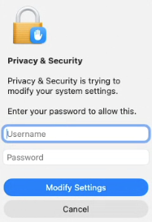

Welcome to your Remote Desktop
If you encounter an authentication prompt, try the following credentials:
Username:
admin
Password:
admin
Example image:

If you encounter any issues, please visit https://github.com/kingdudely/os-in-browser.pages.dev-host/issues/new to submit a new issue.
Close this window to end the session.